library(tidyverse)
library(janitor)
library(skimr)
library(wbstats)
library(patchwork)Descriptive Statistics
Readings
Class slides
Session
Describing categorical variables
Imagine that we have completed a survey of 10,000 individuals. We asked them their age and level of satisfaction with their job.
We store their responses in a data frame called survey_df. It has 100 observations (one for each respondent) and three variables: a unique id (id); their age in years (age); and their level of satisfaction (sat), which can take one of four values: very unsatisfied, unsatisfied, satisfied, and very satisfied.
survey_df# A tibble: 10,000 × 3
id age sat
<int> <int> <chr>
1 1 53 Unsatisfied
2 2 24 Very unsatisfied
3 3 65 Unsatisfied
4 4 45 Satisfied
5 5 60 Unsatisfied
6 6 51 Very satisfied
7 7 59 Very satisfied
8 8 38 Very satisfied
9 9 25 Unsatisfied
10 10 46 Very satisfied
# ℹ 9,990 more rowsFrequency distribution
We can take advantage of janitor::tabyl() to quickly calculate the number and proportion of respondents who provided each level of satisfaction.
tabyl(survey_df, sat) sat n percent
Satisfied 2543 0.2543
Unsatisfied 2476 0.2476
Very satisfied 2504 0.2504
Very unsatisfied 2477 0.2477Alternatively, we can use skimr::skim() to get a useful summary of this categorical variable.
skim(survey_df$sat)| Name | survey_df$sat |
| Number of rows | 10000 |
| Number of columns | 1 |
| _______________________ | |
| Column type frequency: | |
| character | 1 |
| ________________________ | |
| Group variables | None |
Variable type: character
| skim_variable | n_missing | complete_rate | min | max | empty | n_unique | whitespace |
|---|---|---|---|---|---|---|---|
| data | 0 | 1 | 9 | 16 | 0 | 4 | 0 |
Visualizing this frequency
We can easily visualize this using a bar chart.
p1 <- survey_df |>
tabyl(sat) |>
ggplot(aes(x = n, y = sat)) +
geom_col() +
theme_minimal()
p2 <- survey_df |>
tabyl(sat) |>
ggplot(aes(x = percent, y = sat)) +
geom_col() +
theme_minimal()
p1 | p2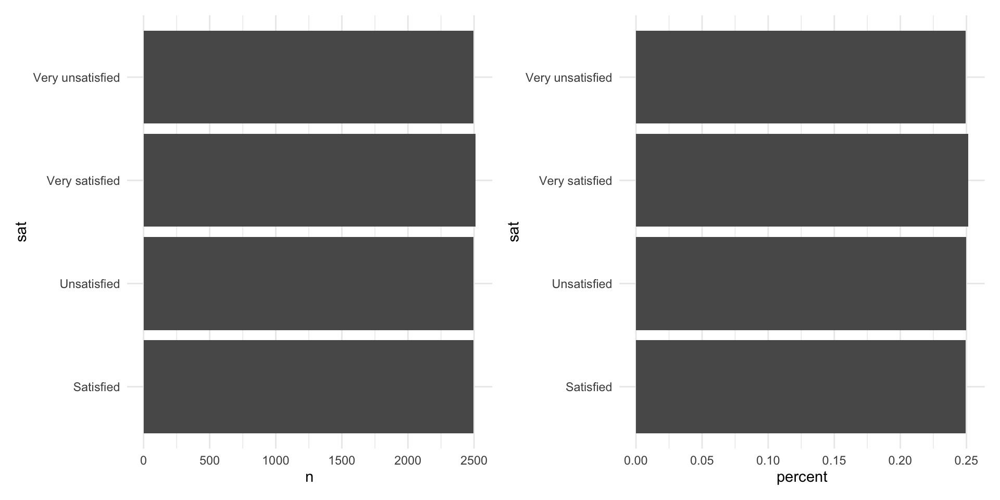
Working with factors
Notice how our categories are ordered: very satisfied sits above satisfied. We can tell R this information factor().
survey_df <- survey_df |>
mutate(
sat = factor(sat, levels = c("Very unsatisfied",
"Unsatisfied",
"Satisfied",
"Very satisfied"))
)Now when we work with our categorical variables, they will be ordered.
survey_df |>
tabyl(sat) |>
ggplot(aes(x = n, y = sat)) +
geom_col() +
theme_minimal()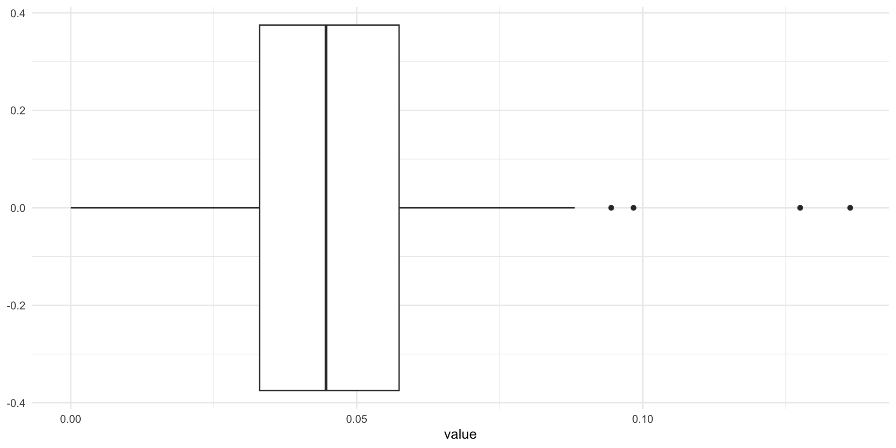
Describing continuous variables
We can also get a good sense of our continuous variable age by looking at the center, spread, and shape of its distribution.
Five number summary
We can use skimr::skim() to quickly get useful information on our continuous variable.
skim(survey_df$age)| Name | survey_df$age |
| Number of rows | 10000 |
| Number of columns | 1 |
| _______________________ | |
| Column type frequency: | |
| numeric | 1 |
| ________________________ | |
| Group variables | None |
Variable type: numeric
| skim_variable | n_missing | complete_rate | mean | sd | p0 | p25 | p50 | p75 | p100 | hist |
|---|---|---|---|---|---|---|---|---|---|---|
| data | 0 | 1 | 39.77 | 14.58 | 15 | 27 | 40 | 52 | 65 | ▇▇▇▇▇ |
Histogram
ggplot(survey_df, aes(x = age)) +
geom_histogram() +
theme_minimal()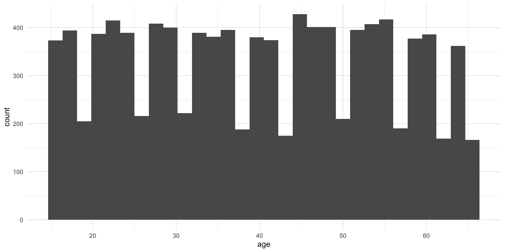
ggplot(survey_df, aes(x = age)) +
geom_histogram(binwidth = 5) +
theme_minimal()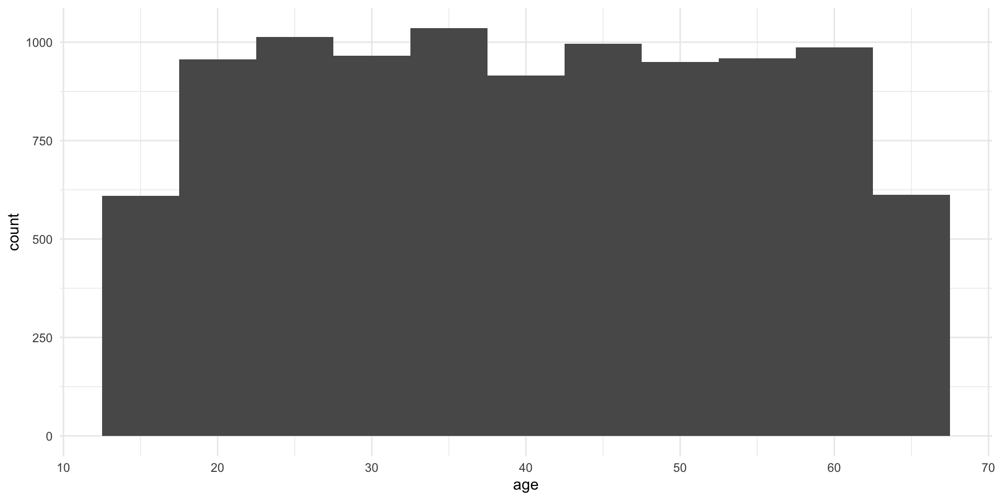
Density curves
ggplot(survey_df, aes(x = age)) +
geom_density() +
theme_minimal()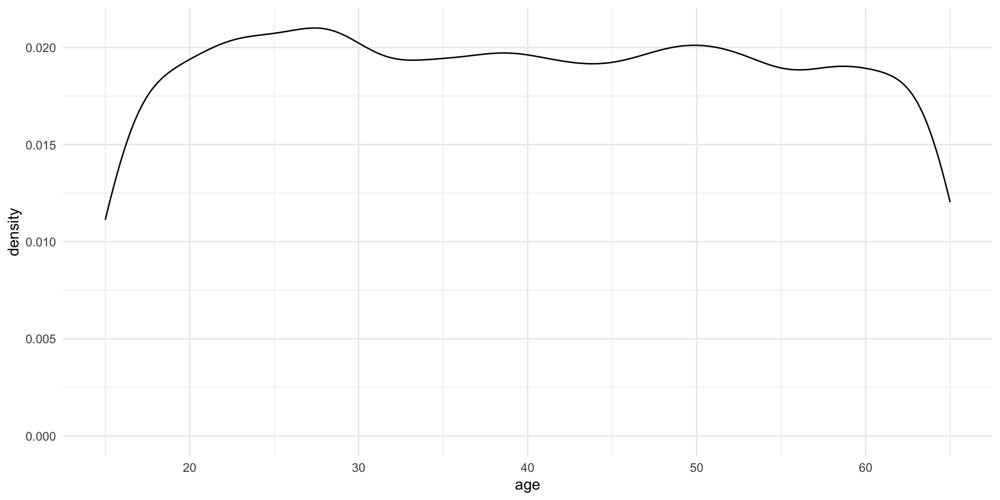
Box and whisker plots
ggplot(survey_df, aes(x = age)) +
geom_boxplot() +
theme_minimal()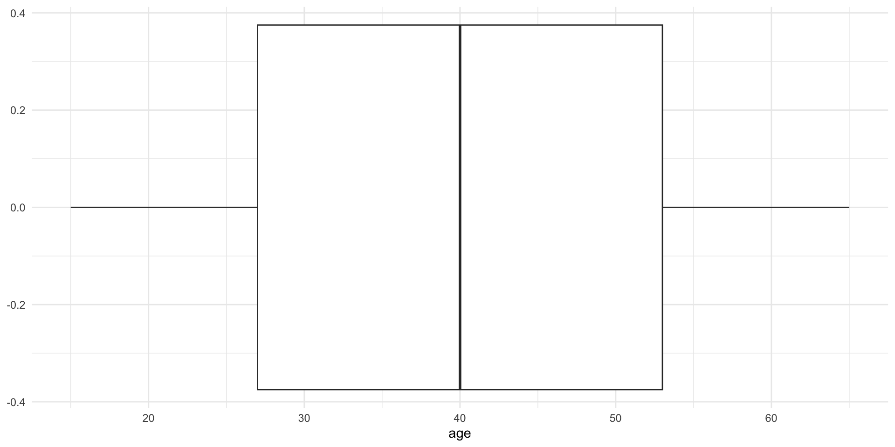
Looking for patterns in our groups
ggplot(survey_df, aes(x = age, y = sat)) +
geom_boxplot() +
theme_minimal()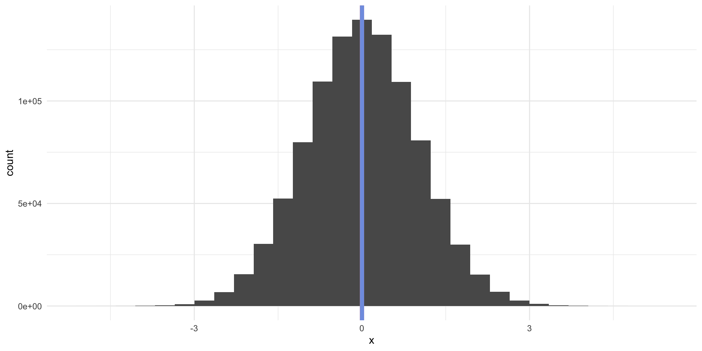
ggplot(survey_df, aes(x = age, y = sat)) +
geom_violin() +
theme_minimal()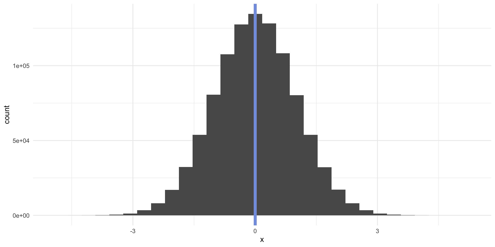
Understanding distributions
Normal distribution
tibble(z = rnorm(n = 1000)) |>
ggplot(aes(x = z)) +
geom_histogram() +
theme_minimal()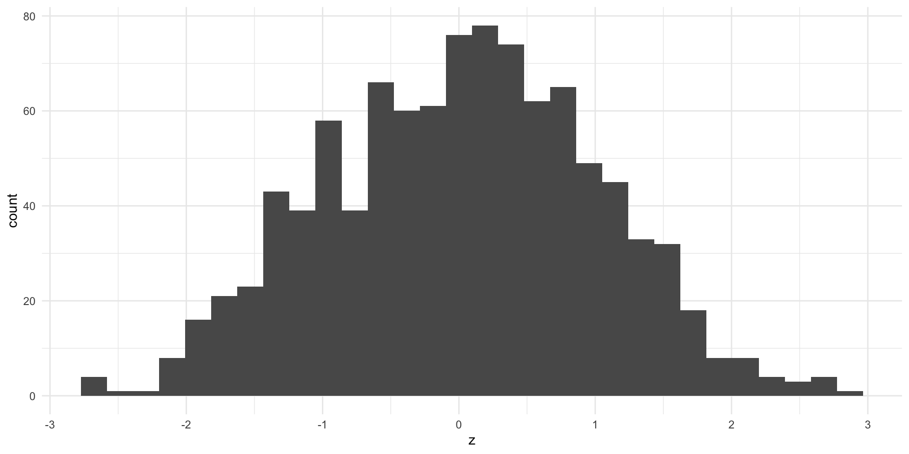
tibble(z = rnorm(n = 1e6)) |>
ggplot(aes(x = z)) +
geom_histogram() +
theme_minimal()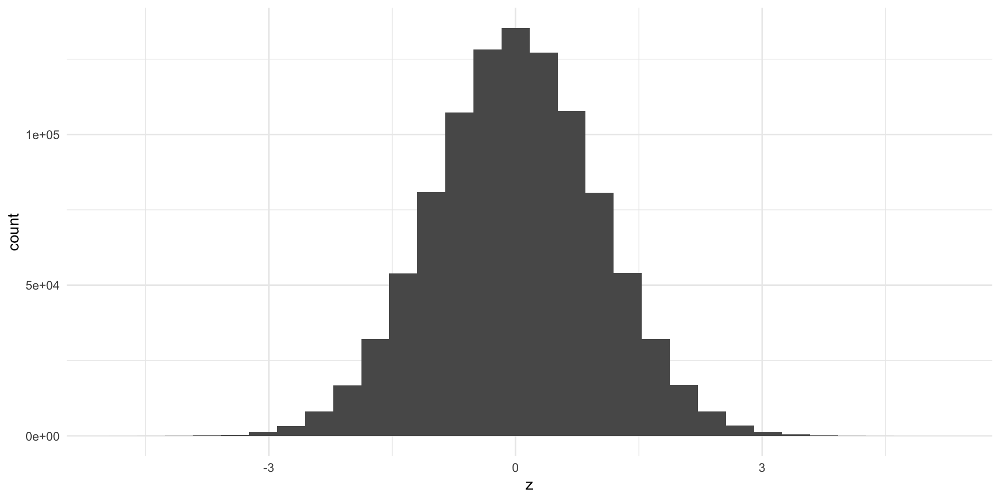
Right skewed distribution
tibble(z = rbeta(10000, 2, 10)) |>
ggplot(aes(x = z)) +
geom_histogram() +
theme_minimal()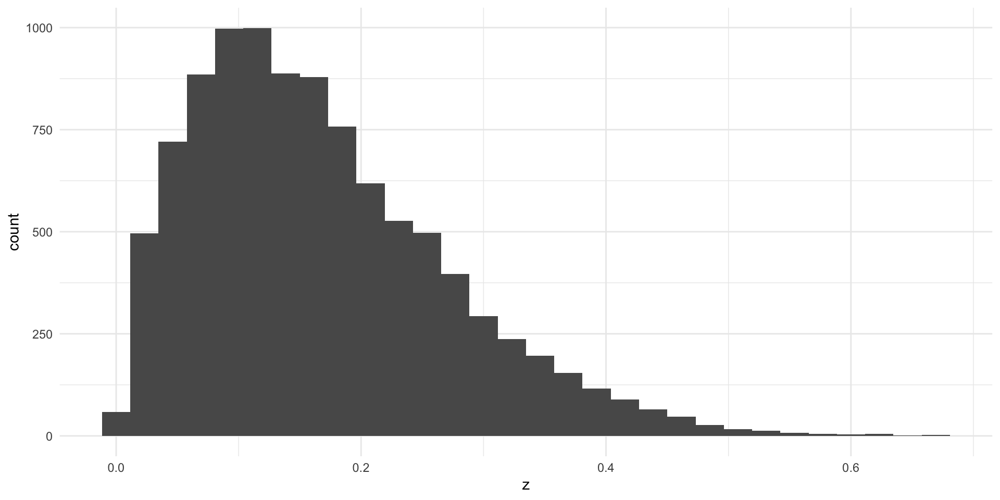
Left skewed distribution
tibble(z = rbeta(10000, 10, 2)) |>
ggplot(aes(x = z)) +
geom_histogram() +
theme_minimal()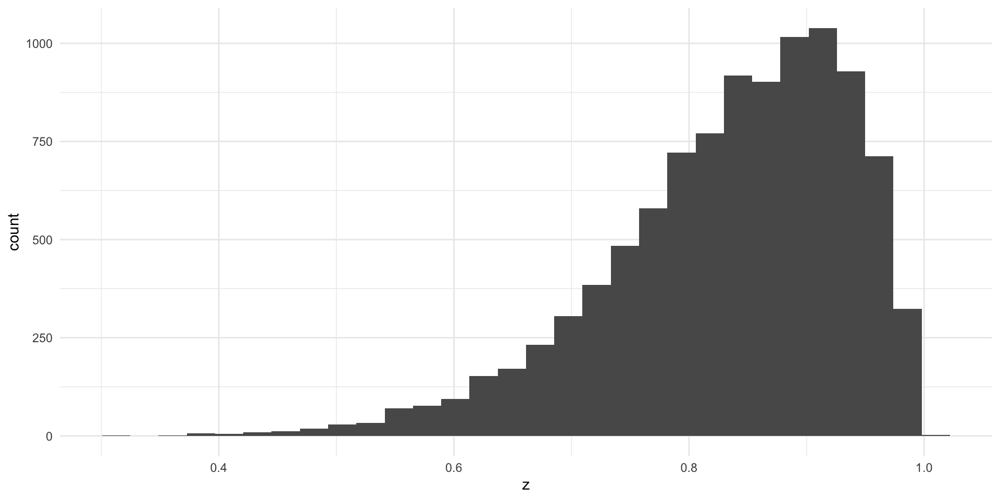
Measures of central tendency: mean, median, and mode
Mean
The mean is the average of all values.
Median
The median is the mid-point of all values.
Mode
The mode is the most frequent of all values.
Using central tendency to describe and understand distributions
Normally distributed vectors share their mean and medians.
norm_dist <- tibble(z = rnorm(n = 1000))
ggplot(norm_dist, aes(x = z)) +
geom_histogram() +
geom_vline(xintercept = mean(norm_dist$z), colour = "red") +
geom_vline(xintercept = median(norm_dist$z), colour = "blue") +
theme_minimal()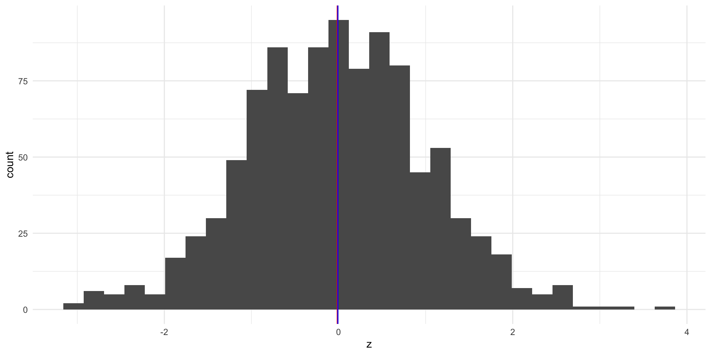
For right skewed data, the mean is greater than the median.
right_dist <- tibble(z = rbeta(10000, 2, 10))
ggplot(right_dist, aes(x = z)) +
geom_histogram() +
geom_vline(xintercept = mean(right_dist$z), colour = "red") +
geom_vline(xintercept = median(right_dist$z), colour = "blue") +
theme_minimal()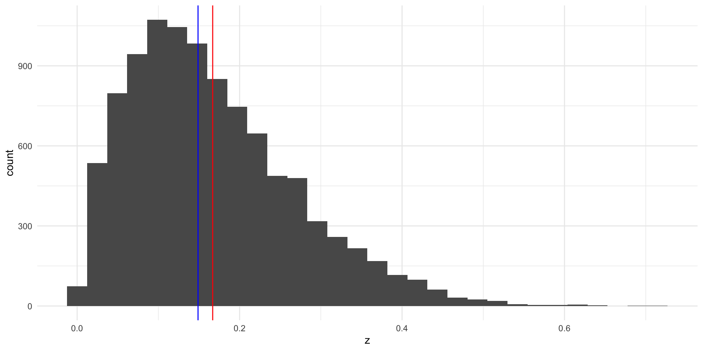
For left skewed data, the mean is smaller than the median.
left_dist <- tibble(z = rbeta(10000, 10, 2))
ggplot(left_dist, aes(x = z)) +
geom_histogram() +
geom_vline(xintercept = mean(left_dist$z), colour = "red") +
geom_vline(xintercept = median(left_dist$z), colour = "blue") +
theme_minimal()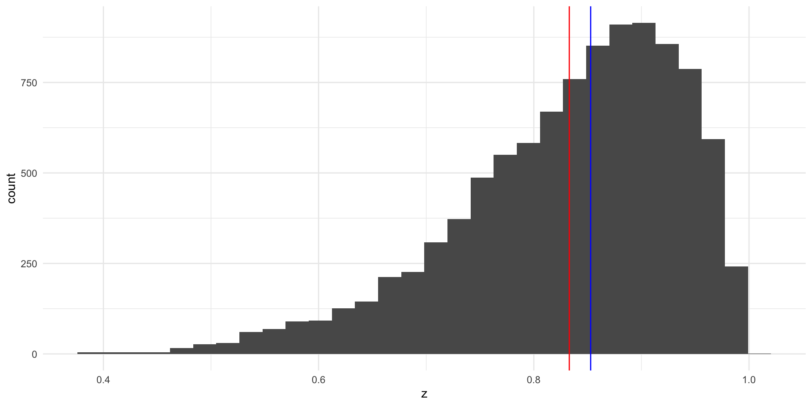
Measures of spread: range, variance, and standard deviation
Range
The range is the difference between the largest and smallest value.
max(survey_df$age) - min(survey_df$age)[1] 50Variance
The variance measures how spread out your values are. Take a look at these two plots. Both have the same center point (0) and number of observations (1,000,000). However, the data are much more spread out around that center point in the top graph.
wide_dist <- tibble(z = rnorm(1e6, sd = 2))
p1 <- ggplot(wide_dist, aes(x = z)) +
geom_histogram() +
geom_vline(xintercept = 0) +
theme_minimal() +
scale_x_continuous(limits = c(-4, 4))
narrow_dist <- tibble(z = rnorm(1e6, sd = 1))
p2 <- ggplot(narrow_dist, aes(x = z)) +
geom_histogram() +
geom_vline(xintercept = 0) +
theme_minimal() +
scale_x_continuous(limits = c(-4, 4))
p1 / p2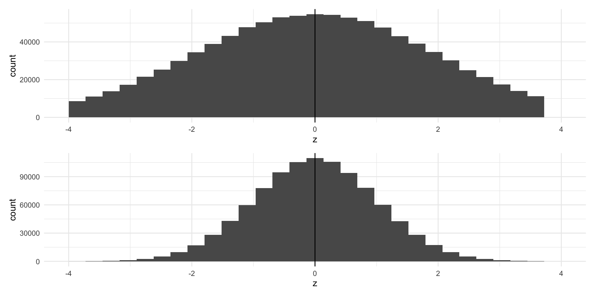
The data in the top graph have far more variance than those in the bottom graph. We measure this by calculating the average of the squares of the deviations of the observations from their mean.
\[ s^2 = \frac{\Sigma(x_i - \bar{x})^2}{n - 1} \]
Let’s step through this. We will first calculate the variance for wide_dist, or the top graph.
wide_var_calc <- wide_dist |>
mutate(
mean = mean(wide_dist$z),
diff = z - mean,
diff_2 = diff^2
)
wide_var_calc# A tibble: 1,000,000 × 4
z mean diff diff_2
<dbl> <dbl> <dbl> <dbl>
1 1.77 0.00160 1.77 3.13
2 0.481 0.00160 0.480 0.230
3 1.41 0.00160 1.41 1.98
4 0.719 0.00160 0.717 0.514
5 -2.35 0.00160 -2.35 5.51
6 -1.29 0.00160 -1.29 1.66
7 -3.71 0.00160 -3.71 13.8
8 3.17 0.00160 3.17 10.1
9 -1.86 0.00160 -1.86 3.46
10 -0.299 0.00160 -0.301 0.0903
# ℹ 999,990 more rowsWe take the sum of square of the difference between each observation and the mean of our whole sample. We then divide that by one less than our number of observations.
wide_var <- sum(wide_var_calc$diff_2) / (nrow(wide_var_calc) - 1)
wide_var[1] 3.997739We can compare this to the variance for our narrower distribution.
narrow_var_calc <- narrow_dist |>
mutate(
mean = mean(narrow_dist$z),
diff = z - mean,
diff_2 = diff^2
)
narrow_var <- sum(narrow_var_calc$diff_2) / (nrow(narrow_var_calc) - 1)
narrow_var[1] 1.001742It is, in fact, smaller!
We can use var() to do this in one step:
var(wide_dist) z
z 3.997739var(narrow_dist) z
z 1.001742Standard deviation
A simpler measure of spread is the standard deviation. It is simply the square root of the variance.
sqrt(wide_var)[1] 1.999435sqrt(narrow_var)[1] 1.000871If you look back to our graphs, you will see that I set the standard deviations explicitly when I generated the data. rnorm() takes an sd argument. This is great because we can confirm that the standard deviations for the wide and narrow distributions are 2 and 1 respectively (with a little bit of noise).
tibble(
n = rnorm(1e6, sd = 1),
w = rnorm(1e6, sd = 2)
) |>
ggplot() +
geom_density(aes(x = n), colour = "green") +
geom_density(aes(x = w), colour = "lightblue") +
theme_minimal()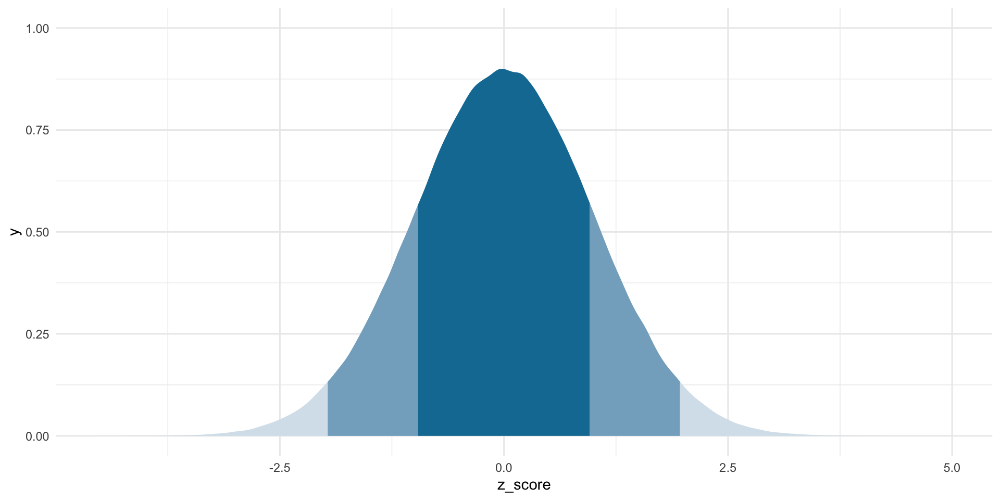
Standardization
Notice how our description of each variable depends on its units of measurement. What do we do if we want to compare across different measurements that have different units?
Z scores
For normal distributions, we can use the z score. This gives us a standard way of understanding how many standard deviations from the mean of a normally distributed variable a value is.
\[ z_i = \frac{x_i - \mu_x}{\sigma_x} \]